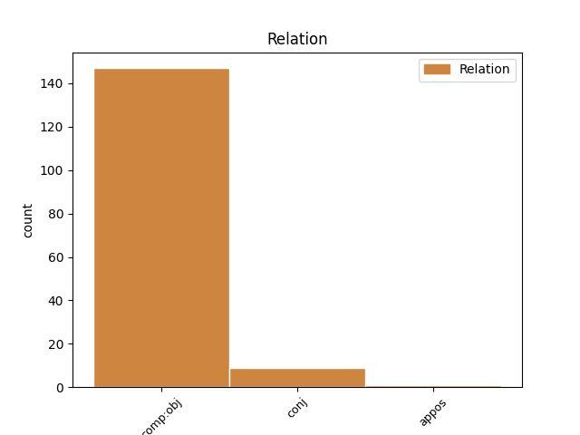
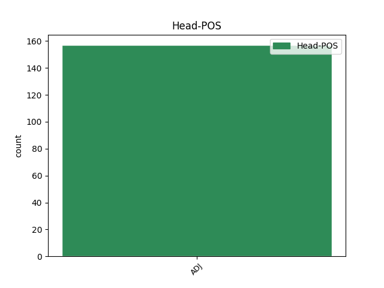
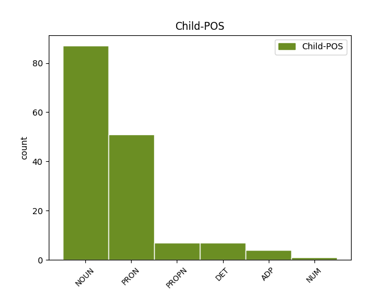

Distribution of features within this leaf



Agreement Rules sorted by frequency.
- When the dependent token is the direct object complements(comp:obj) of the head token, and the head token is ADJ and the dependent token is NOUN.
1 Catherine _ _ _ _ 0 _ _ _
2 Voisin _ _ _ _ 0 _ _ _
3 , _ _ _ _ 0 _ _ _
4 ki _ _ _ _ 0 _ _ _
5 je _ _ _ _ 0 _ _ _
6 v _ _ _ _ 0 _ _ _
7 17. _ _ _ _ 0 _ _ _
8 stoletju _ _ _ _ 0 _ _ _
9 delovala _ _ _ _ 0 _ _ _
10 v _ _ _ _ 0 _ _ _
11 pariški _ _ _ _ 0 _ _ _
12 aristokraciji _ _ _ _ 0 _ _ _
13 , _ _ _ _ 0 _ _ _
14 si _ _ _ _ 0 _ _ _
15 je _ _ _ _ 0 _ _ _
16 izmislila _ _ _ _ 0 _ _ _
17 črne _ _ _ _ 0 _ _ _
18 maše _ _ _ _ 0 _ _ _
19 , _ _ _ _ 0 _ _ _
20 perverzno _ _ _ _ 0 _ _ _
21 parodijo _ _ _ _ 0 _ _ _
22 katoliškega _ _ _ _ 0 _ _ _
23 obreda _ _ _ _ 0 _ _ _
24 , _ _ _ _ 0 _ _ _
25 obsegajočo obsegajoč ADJ Appfsa Case=Acc|Degree=Pos|Gender=Fem|Number=Sing|VerbForm=Part 0 _ _ _
26 spolne _ _ _ _ 0 _ _ _
27 » _ _ _ _ 0 _ _ _
28 vaje vaja NOUN Ncfpa Case=Acc|Gender=Fem|Number=Plur 25 comp:obj _ Dep=25|Rel=Obj|SpaceAfter=No
29 « _ _ _ _ 0 _ _ _
30 in _ _ _ _ 0 _ _ _
31 žrtvovanje _ _ _ _ 0 _ _ _
32 otrok _ _ _ _ 0 _ _ _
33 na _ _ _ _ 0 _ _ _
34 oltarju _ _ _ _ 0 _ _ _
35 . _ _ _ _ 0 _ _ _
1 V _ _ _ _ 0 _ _ _
2 igri _ _ _ _ 0 _ _ _
3 ne _ _ _ _ 0 _ _ _
4 morejo _ _ _ _ 0 _ _ _
5 sodelovati _ _ _ _ 0 _ _ _
6 osebe _ _ _ _ 0 _ _ _
7 , _ _ _ _ 0 _ _ _
8 ki _ _ _ _ 0 _ _ _
9 sodelujejo _ _ _ _ 0 _ _ _
10 pri _ _ _ _ 0 _ _ _
11 organizaciji _ _ _ _ 0 _ _ _
12 , _ _ _ _ 0 _ _ _
13 pripravi _ _ _ _ 0 _ _ _
14 in _ _ _ _ 0 _ _ _
15 izvedbi _ _ _ _ 0 _ _ _
16 nagradne _ _ _ _ 0 _ _ _
17 igre _ _ _ _ 0 _ _ _
18 , _ _ _ _ 0 _ _ _
19 ter _ _ _ _ 0 _ _ _
20 zaposleni zaposlen ADJ Appmpn Case=Nom|Degree=Pos|Gender=Masc|Number=Plur|VerbForm=Part 0 _ _ _
21 v _ _ _ _ 0 _ _ _
22 podjetju _ _ _ _ 0 _ _ _
23 Burda _ _ _ _ 0 _ _ _
24 , _ _ _ _ 0 _ _ _
25 d. _ _ _ _ 0 _ _ _
26 o. _ _ _ _ 0 _ _ _
27 o. _ _ _ _ 0 _ _ _
28 , _ _ _ _ 0 _ _ _
29 in _ _ _ _ 0 _ _ _
30 njihovi _ _ _ _ 0 _ _ _
31 ožji _ _ _ _ 0 _ _ _
32 sorodniki sorodnik NOUN Ncmpn Case=Nom|Gender=Masc|Number=Plur 20 conj _ Dep=6|Rel=Coord|SpaceAfter=No
33 . _ _ _ _ 0 _ _ _
1 Tokrat _ _ _ _ 0 _ _ _
2 so _ _ _ _ 0 _ _ _
3 jih _ _ _ _ 0 _ _ _
4 lovili _ _ _ _ 0 _ _ _
5 na _ _ _ _ 0 _ _ _
6 plitvini _ _ _ _ 0 _ _ _
7 dveh _ _ _ _ 0 _ _ _
8 do _ _ _ _ 0 _ _ _
9 štirih _ _ _ _ 0 _ _ _
10 metrov _ _ _ _ 0 _ _ _
11 pred _ _ _ _ 0 _ _ _
12 polotokom _ _ _ _ 0 _ _ _
13 Seča _ _ _ _ 0 _ _ _
14 z _ _ _ _ 0 _ _ _
15 mrežo _ _ _ _ 0 _ _ _
16 , _ _ _ _ 0 _ _ _
17 ki _ _ _ _ 0 _ _ _
18 je _ _ _ _ 0 _ _ _
19 dolga _ _ _ _ 0 _ _ _
20 kar _ _ _ _ 0 _ _ _
21 tisoč _ _ _ _ 0 _ _ _
22 tristo _ _ _ _ 0 _ _ _
23 metrov _ _ _ _ 0 _ _ _
24 , _ _ _ _ 0 _ _ _
25 in _ _ _ _ 0 _ _ _
26 s _ _ _ _ 0 _ _ _
27 tremi _ _ _ _ 0 _ _ _
28 večjimi velik ADJ Agcfpi Case=Ins|Degree=Cmp|Gender=Fem|Number=Plur 0 _ _ _
29 ter _ _ _ _ 0 _ _ _
30 desetimi deset NUM Mlc-pi Case=Ins|Number=Plur|NumForm=Word|NumType=Card 28 conj _ Dep=28|Rel=Coord
31 manjšimi _ _ _ _ 0 _ _ _
32 barkami _ _ _ _ 0 _ _ _
33 . _ _ _ _ 0 _ _ _
1 Kar _ _ _ _ 0 _ _ _
2 nekaj _ _ _ _ 0 _ _ _
3 zgodovinskih _ _ _ _ 0 _ _ _
4 dosežkov _ _ _ _ 0 _ _ _
5 so _ _ _ _ 0 _ _ _
6 si _ _ _ _ 0 _ _ _
7 na _ _ _ _ 0 _ _ _
8 SP _ _ _ _ 0 _ _ _
9 v _ _ _ _ 0 _ _ _
10 Anaheimu _ _ _ _ 0 _ _ _
11 zaželeli _ _ _ _ 0 _ _ _
12 Američani _ _ _ _ 0 _ _ _
13 in _ _ _ _ 0 _ _ _
14 ob _ _ _ _ 0 _ _ _
15 zlatih _ _ _ _ 0 _ _ _
16 kolajnah _ _ _ _ 0 _ _ _
17 v _ _ _ _ 0 _ _ _
18 ekipnem _ _ _ _ 0 _ _ _
19 delu _ _ _ _ 0 _ _ _
20 tekmovanja _ _ _ _ 0 _ _ _
21 je _ _ _ _ 0 _ _ _
22 tu _ _ _ _ 0 _ _ _
23 tudi _ _ _ _ 0 _ _ _
24 zmaga _ _ _ _ 0 _ _ _
25 v _ _ _ _ 0 _ _ _
26 moškem _ _ _ _ 0 _ _ _
27 mnogoboju _ _ _ _ 0 _ _ _
28 , _ _ _ _ 0 _ _ _
29 v _ _ _ _ 0 _ _ _
30 katerem _ _ _ _ 0 _ _ _
31 ne _ _ _ _ 0 _ _ _
32 bosta _ _ _ _ 0 _ _ _
33 nastopila _ _ _ _ 0 _ _ _
34 najboljša dober ADJ Agsmdn Case=Nom|Degree=Sup|Gender=Masc|Number=Dual 0 _ _ _
35 iz _ _ _ _ 0 _ _ _
36 Genta _ _ _ _ 0 _ _ _
37 2001 _ _ _ _ 0 _ _ _
38 , _ _ _ _ 0 _ _ _
39 Kitajec Kitajec PROPN Npmsn Case=Nom|Gender=Masc|Number=Sing 34 appos _ Dep=0|Rel=Root
40 Feng _ _ _ _ 0 _ _ _
41 Jing _ _ _ _ 0 _ _ _
42 in _ _ _ _ 0 _ _ _
43 Belorus _ _ _ _ 0 _ _ _
44 Ivan _ _ _ _ 0 _ _ _
45 Ivankov _ _ _ _ 0 _ _ _
46 . _ _ _ _ 0 _ _ _
1 Kartico _ _ _ _ 0 _ _ _
2 smo _ _ _ _ 0 _ _ _
3 namreč _ _ _ _ 0 _ _ _
4 testirali _ _ _ _ 0 _ _ _
5 v _ _ _ _ 0 _ _ _
6 računalniku _ _ _ _ 0 _ _ _
7 s _ _ _ _ 0 _ _ _
8 procesorjem _ _ _ _ 0 _ _ _
9 Pentium _ _ _ _ 0 _ _ _
10 na _ _ _ _ 0 _ _ _
11 120 _ _ _ _ 0 _ _ _
12 MHz _ _ _ _ 0 _ _ _
13 ; _ _ _ _ 0 _ _ _
14 opremljen opremljen ADJ Appmsnn Case=Nom|Definite=Ind|Degree=Pos|Gender=Masc|Number=Sing|VerbForm=Part 0 _ _ _
15 je _ _ _ _ 0 _ _ _
16 bil _ _ _ _ 0 _ _ _
17 z _ _ _ _ 0 _ _ _
18 32 _ _ _ _ 0 _ _ _
19 MB _ _ _ _ 0 _ _ _
20 Edo Edo PROPN Npmsn Case=Nom|Gender=Masc|Number=Sing 14 comp:obj _ Dep=14|Rel=Obj
21 RAM _ _ _ _ 0 _ _ _
22 . _ _ _ _ 0 _ _ _
Disagree Examples:
1 V _ _ _ _ 0 _ _ _
2 bolnišnici _ _ _ _ 0 _ _ _
3 bodo _ _ _ _ 0 _ _ _
4 uvedli _ _ _ _ 0 _ _ _
5 tudi _ _ _ _ 0 _ _ _
6 s _ _ _ _ 0 _ _ _
7 šolo _ _ _ _ 0 _ _ _
8 za _ _ _ _ 0 _ _ _
9 starše _ _ _ _ 0 _ _ _
10 , _ _ _ _ 0 _ _ _
11 ki _ _ _ _ 0 _ _ _
12 je _ _ _ _ 0 _ _ _
13 namenjena namenjen ADJ Appfsn Case=Nom|Degree=Pos|Gender=Fem|Number=Sing|VerbForm=Part 0 _ _ _
14 vzgoji vzgoja NOUN Ncfsd Case=Dat|Gender=Fem|Number=Sing 13 comp:obj _ Dep=13|Rel=Obj
15 in _ _ _ _ 0 _ _ _
16 izobraževanju _ _ _ _ 0 _ _ _
17 nosečnic _ _ _ _ 0 _ _ _
18 in _ _ _ _ 0 _ _ _
19 njihovih _ _ _ _ 0 _ _ _
20 partnerjev _ _ _ _ 0 _ _ _
21 . _ _ _ _ 0 _ _ _
1 Bolnikova _ _ _ _ 0 _ _ _
2 zaskrbljenost _ _ _ _ 0 _ _ _
3 je _ _ _ _ 0 _ _ _
4 pri _ _ _ _ 0 _ _ _
5 stroki _ _ _ _ 0 _ _ _
6 pogosto _ _ _ _ 0 _ _ _
7 deležna deležen ADJ Agpfsn Case=Nom|Degree=Pos|Gender=Fem|Number=Sing 0 _ _ _
8 površne _ _ _ _ 0 _ _ _
9 tolažbe tolažba NOUN Ncfsg Case=Gen|Gender=Fem|Number=Sing 7 comp:obj _ Dep=7|Rel=Obj
10 ali _ _ _ _ 0 _ _ _
11 pokroviteljske _ _ _ _ 0 _ _ _
12 drže _ _ _ _ 0 _ _ _
13 . _ _ _ _ 0 _ _ _
1 Temu ta DET Pd-nsd Case=Dat|Gender=Neut|Number=Sing|PronType=Dem 2 comp:obj _ Dep=2|Rel=Obj
2 primerna primeren ADJ Agpfsn Case=Nom|Degree=Pos|Gender=Fem|Number=Sing 0 _ _ _
3 je _ _ _ _ 0 _ _ _
4 tudi _ _ _ _ 0 _ _ _
5 notranjost _ _ _ _ 0 _ _ _
6 kabine _ _ _ _ 0 _ _ _
7 , _ _ _ _ 0 _ _ _
8 izpeljana _ _ _ _ 0 _ _ _
9 je _ _ _ _ 0 _ _ _
10 iz _ _ _ _ 0 _ _ _
11 masterja _ _ _ _ 0 _ _ _
12 in _ _ _ _ 0 _ _ _
13 se _ _ _ _ 0 _ _ _
14 po _ _ _ _ 0 _ _ _
15 udobju _ _ _ _ 0 _ _ _
16 lahko _ _ _ _ 0 _ _ _
17 primerja _ _ _ _ 0 _ _ _
18 z _ _ _ _ 0 _ _ _
19 osebnim _ _ _ _ 0 _ _ _
20 avtomobilom _ _ _ _ 0 _ _ _
21 . _ _ _ _ 0 _ _ _
1 Bila _ _ _ _ 0 _ _ _
2 je _ _ _ _ 0 _ _ _
3 zatopljena zatopljen ADJ Appfsn Case=Nom|Degree=Pos|Gender=Fem|Number=Sing|VerbForm=Part 0 _ _ _
4 vase vase PRON Px---a--b Case=Acc|PronType=Prs|Reflex=Yes|Variant=Bound 3 comp:obj _ Dep=3|Rel=Obj|SpaceAfter=No
5 . _ _ _ _ 0 _ _ _
1 Nokia _ _ _ _ 0 _ _ _
2 7270 _ _ _ _ 0 _ _ _
3 ima _ _ _ _ 0 _ _ _
4 na _ _ _ _ 0 _ _ _
5 boku _ _ _ _ 0 _ _ _
6 gumb _ _ _ _ 0 _ _ _
7 , _ _ _ _ 0 _ _ _
8 ki _ _ _ _ 0 _ _ _
9 je _ _ _ _ 0 _ _ _
10 namenjen namenjen ADJ Appmsnn Case=Nom|Definite=Ind|Degree=Pos|Gender=Masc|Number=Sing|VerbForm=Part 0 _ _ _
11 samo _ _ _ _ 0 _ _ _
12 tej _ _ _ _ 0 _ _ _
13 funkciji funkcija NOUN Ncfsd Case=Dat|Gender=Fem|Number=Sing 10 comp:obj _ Dep=10|Rel=Obj|SpaceAfter=No
14 . _ _ _ _ 0 _ _ _